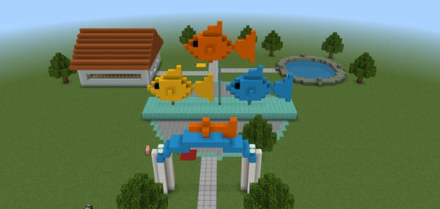
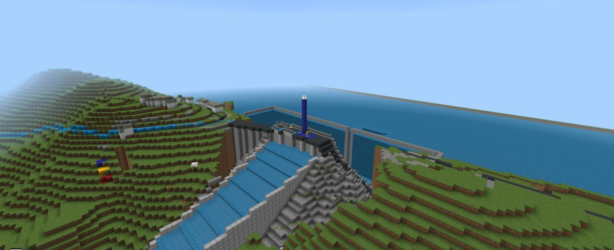
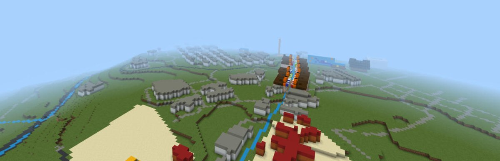
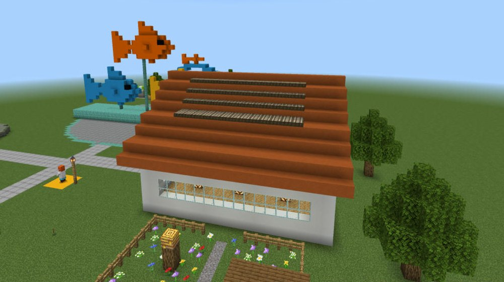

鱻魚學園 4 站闖關
沿著步道走紅、黃、綠、藍四站，跟站上的 NPC 對話答題，每站 3 題。
- 紅站：「鱻」是什麼字（語文）
- 黃站：生態池觀察員（自然）
- 綠站：我的家鄉石門水庫（社會）
- 藍站：愛護水中生物小尖兵（環境教育）
從學校大門出發，走進石門大壩、三坑老街、十一份園區……跟著關主「阿凱老師」闖關，在方塊世界裡學語文、自然、家鄉和環境教育。
需要 Minecraft 教育版（學校帳號登入）・建議中年級・約 3 節課
一個世界檔，裝著學校和整個石門地區。學生走到哪裡，關主阿凱老師就在畫面上提示下一步。
沿著步道走紅、黃、綠、藍四站，跟站上的 NPC 對話答題，每站 3 題。
依開放街圖的真實道路、河流與建築蓋成，1 格＝5 公尺，導航 NPC 帶你出發。石門大壩一帶依真實高程做出山丘，水庫水面就在壩頂下方。
走到看板前先觀察現場，再站上紅、黃、藍地墊作答，最後串起「水的旅程」。
跟校園生活連在一起的小任務，遊戲會自動記錄完成情形。
關主阿凱老師用真人聲音說明任務、介紹景點，走到不同地方會換背景音樂。




每節 40 分鐘。學生各自開一份世界檔，進度會留在自己的世界裡，下一節接著玩。
這是建議流程，可依班級節奏調整。低年級可以只做第 1 節；高年級可加入小組討論「生態池改善方案」。
世界檔下載一次，就能在每台裝置上匯入。每位學生各開一份，互不影響。
鱻魚特色學園_學生版.mcworld。iPad 版還沒有實機驗證：問答 NPC 應該都能用，關主提示、垃圾分類、關燈這類程式功能是否支援，測完會在這裡更新。
📘 完整的 3 節課教案、課前準備檢查表、操作說明與疑難排解，請看 教案與教師手冊（可列印或存成 PDF）。學生完成後可到 印通關證書 輸入通關碼印出證書。
上課時在遊戲聊天框輸入（世界已開啟指令功能）。學生端不需要輸入任何指令。
| 指令 | 作用 |
|---|---|
/scriptevent akai:say 大家到石門大壩集合～ | 以阿凱老師的身分全班廣播 |
/scriptevent akai:patrol off／on | 路人 NPC 暫停／繼續走動（需要學生專心時） |
/scriptevent akai:lightson | 教室回到上課前：6 盞燈打開、冷氣回到 22 度、屋頂太陽能板拆下，給下一班練習 |
/scriptevent akai:ac up／down | 代替牆上的按鈕調高／調低冷氣 1 度（示範用） |
/scriptevent akai:resetall | 所有任務進度歸零（主線、走讀、生活任務） |
要用 Minecraft 教育版（Minecraft Education）。這份世界用到教育版的 NPC 與程式功能，一般版打不開。教育版需要學校的組織帳號登入，台灣師生可用教育雲帳號啟用 Office 365 取得。
依微軟說明，沒有正式授權的帳號有免費登入次數限制（約 10 次）。正式上課前，請先確認學校是否已有教育版授權。
教育版有 Chromebook 與行動裝置版本，但這份世界還沒在這些裝置上測試過，目前建議先用 Windows 電腦。
學生版世界不會連任何伺服器，所有進度只存在該台裝置的世界檔裡。學習單只寫年班座號，不需要學生姓名。
不在。進度跟著那台裝置上的世界走；換裝置就從頭開始。建議同一位學生固定用同一台。
道路、河流和建築位置來自開放街圖（OpenStreetMap），景點造型參考公開資料重新設計，是「縮小版的石門」。部分細節（例如黑白洗的位置）是示意，實地參訪請以現場為準。